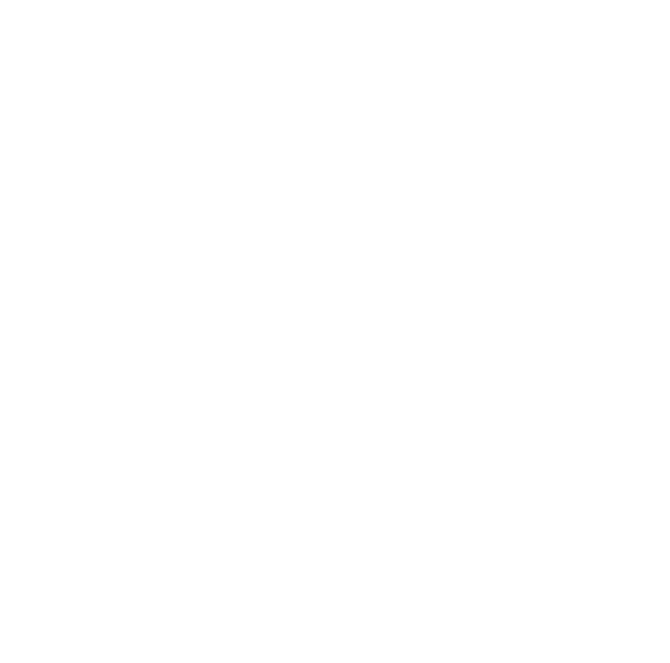
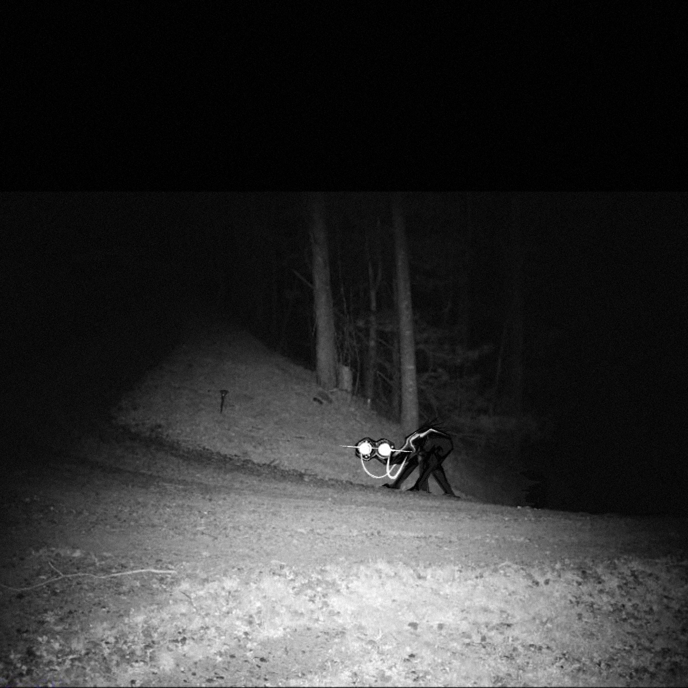

WHITE EYES IN BLACK SHADOW
“Stop looking, why won’t everyone avert their eyes?! Let me blend into the dark and remain hidden forevermore.”

(R1)1-26-3, or “White Eyes in Black Shadow”, is an electromagnetic radiative phenomenon resembling that of a permeating shadow. (R1)1-26-3’s range varies sporadically, but always covers around half of the room which it is confined within. Stepping into (R1)1-26-3 poses no physical or psychological threat in itself, and behaves with the same characteristics of a shadow. Within (R1)1-26-3, three animal-like beings classified as “Residents” patrol regularly, always within the darkness of (R1)1-26-3. If one or more Residents is lost for whatever reason, another Resident will spontaneously appear within (R1)1-26-3 after around 24 hours.